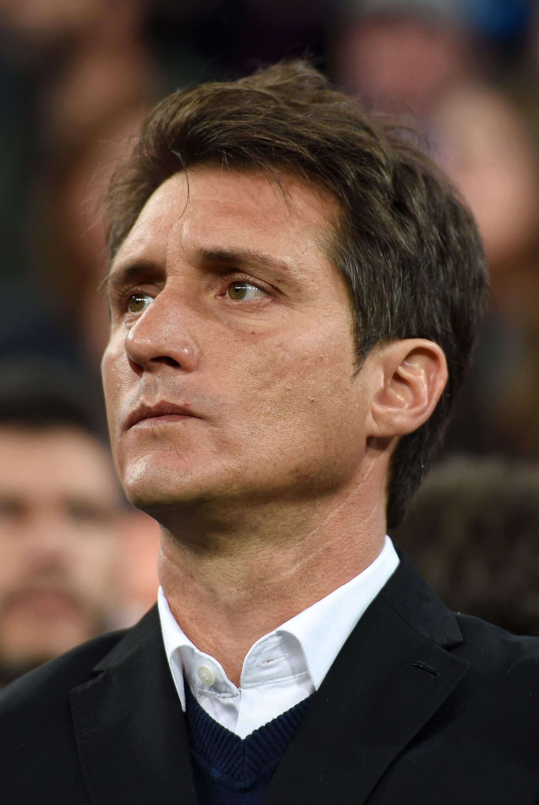
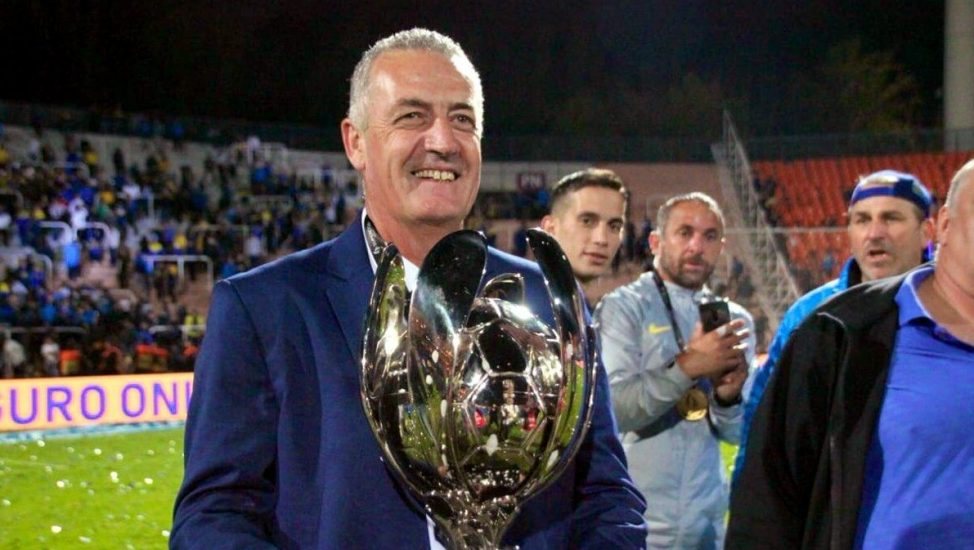
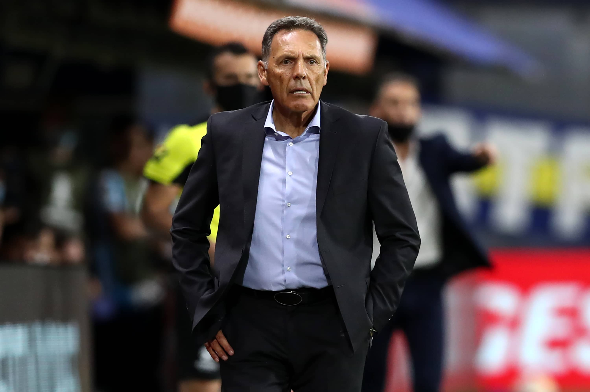
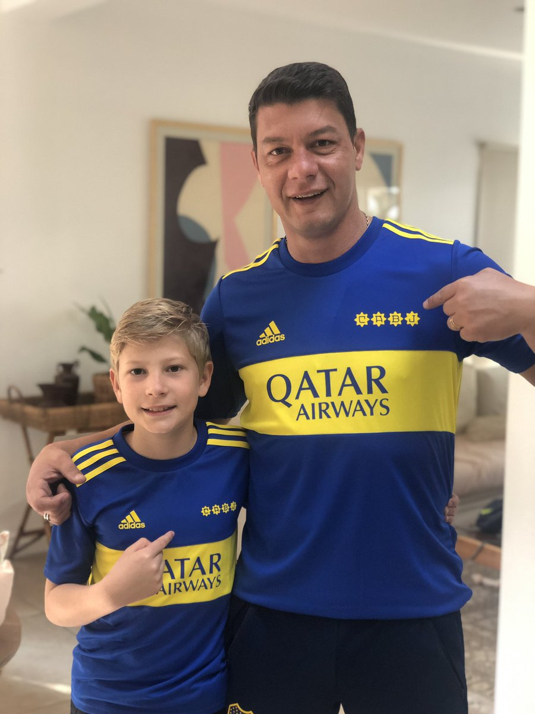
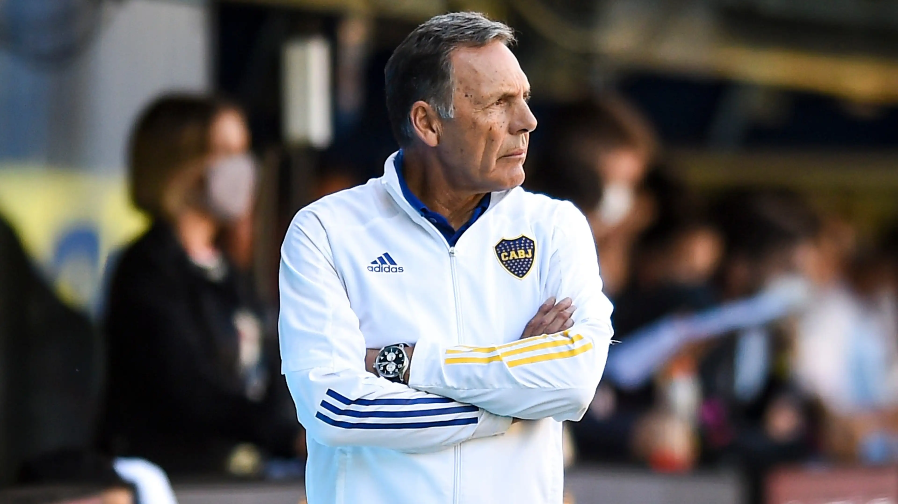
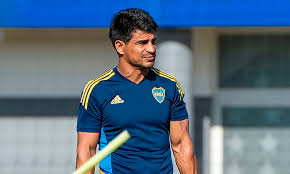
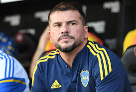
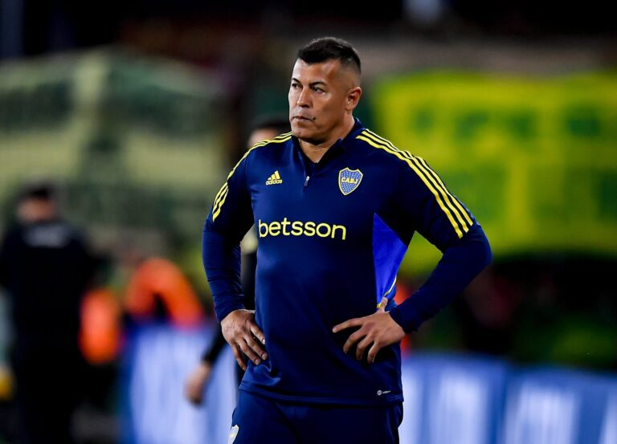

Quienes fueron estos y cuantos años estuvieron?
- 02.03.2016 - 31.12.2018 Guillermo Barros Schelotto 
- 02.01.2019 - 31.12.2019 Gustavo Alfaro 
- 01.01.2020 - 23.07.2021 Miguel Russo 
- 23.07.2021 - 28.07.2021 Sebastián Battaglia 
- 29.07.2021 - 17.08.2021 Miguel Russo 
- 18.08.2021 - 06.07.2022 Sebastián Battaglia
- 06.07.2022 - 28.03.2023 Hugo Ibarra 
- 29.03.2023 - 09.04.2023 Mariano Herrón 
- 10.04.2023 - 31.12.2023 Jorge Almirón 
- 07.11.2023 - 31.12.2023 Mariano Herrón
- 01.01.2024 - 31.12.2025 Diego Martínez
- 06.07.2022 - 28.03.2023 Hugo Ibarra
- 10.04.2023 - 31.12.2023 Jorge Almirón
- 07.11.2023 - 31.12.2023 Mariano Herrón
Ganó dos titulos del futbol argentino
Solo ganó 1 supercopa Argentina
Ganó una superliga, Copa Diego Maradona
Ganó una copa argentina
Solo una copa argentina
.jpg)
Ganó otra copa argentina
Ganó la liga profesional 2022 y la supercopa 2022
No ganó nada
No ganó nada pero llegó a una final de libertadores

Tampoco ganó nada

Por ahora no ganó nada pero tiene 4 meses en el club
Ganó la liga profesional 2022 y la supercopa 2022
No ganó nada pero llegó a una final de libertadores
Tampoco ganó nada